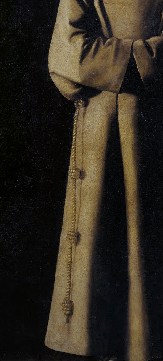

Tre knutar
Ett spel om svåra val
Tema: Mänsklighet Moral Tro
Året är 1527 och franciskanermunken Lars Sigfridsson söker skydd i Uppsala domkyrka. Hans bröder från klostret har följt med honom och ni hör att kungens soldater slår på porten. De kräver att Lars lämnas ut för förräderi mot kronan. Vilka val är de rätta? Vad väljer du?

Spelet kommer att handla om valet att lämna ut Lars eller inte, men också om att välja sin egen framtid. Reformationen och Lars situation ställer frågorna om den egna tron och lojaliteten mot vänner och kyrka på sin spets. Det kommer att finnas konflikter inbyggda i gruppen där vissa har mer att vinna eller förlora på olika utfall.
Frågor som din roll kan behöva ställa sig under spelet är till exempel: Hur mycket är det värt att stå upp för en vän eller sin tro? Hur mycket är status i samhället värt? Är jag individualist eller en del av kollektivet?
Lajvet baseras till stor del på historiska händelser, men vi har tagit oss vissa friheter med händelseförloppet. I samband med lajvet kommer vi att hålla en kort historisk föreläsning om de faktiska skeendena under denna tid och klargöra vad som skiljer dem från lajvets fiktion.
Roll
Du spelar munk från Lars kloster som har flytt till domkyrkan tillsammans med honom för att söka asyl. Du får ett rollskelett av oss på plats och vi bygger tillsammans ut det genom rollövningar. All information du behöver för att spela får du får du i samband med förberedelseworkshopen innan lajvet.
Vi har valt att alla spelar munkar, oavsett sin egen könsidentifikation, detta eftersom lajvet kretsar kring frågor och relationer som uppstår i den könshomogena miljö som ett kloster under 1500-talet innebar, samtidigt som vi vill välkomna spelare av alla kön. Vi vill understryka att lajvet inte handlar om att på ett trovärdigt sätt gestalta män, i kroppsspråk, etc, utan vi vill att fokus ska ligga i utforskandet av de moraliska frågor som munkarna ställs inför. Vi ser utforskandet av genusaspekten i historia och nutid som oerhört intressant och viktig, men fokus för det här lajvet är ett annat.
Inspiration
Lajvet hämtar inspiration från flera källor. Bland annat filmen: Gudar och människor (Originaltitel: Des hommes et des dieux), om du vill får du gärna se filmen innan lajvet som inspirationskälla.
Praktiskt
Tre knutar kommer att spelas den 13 april 2013 i Uppsala Domkyrka. Vi samlas vid domkyrkans huvudingång kl 16:00 och håller på till senast 23.45. Om du åker i riktning mot Stockholm efter lajvet kan du räkna med att ta SJs regionaltåg 00.11.
Lajvet kommer kosta 150 kr, och betalas via faktura till den adress du angett vid anmälan. Om du inte har möjlighet att betala för lajvet, kommer det via det följebrev som kommer med fakturan gå att ange det och du är ändå varmt välkommen att delta på lajvet.
Deltagare: max 14 spelare.
Vanliga frågor
Behöver jag ha med mig någon särskild rekvisita t.ex. kläder?
Nej. Du får den kostym och rekvisita du behöver på plats.
När får jag min roll?
Du får ditt rollskelett på plats, och sen utvecklar vi rollerna vidare tillsammans genom en förberedelse workshop i anslutning till lajvet.